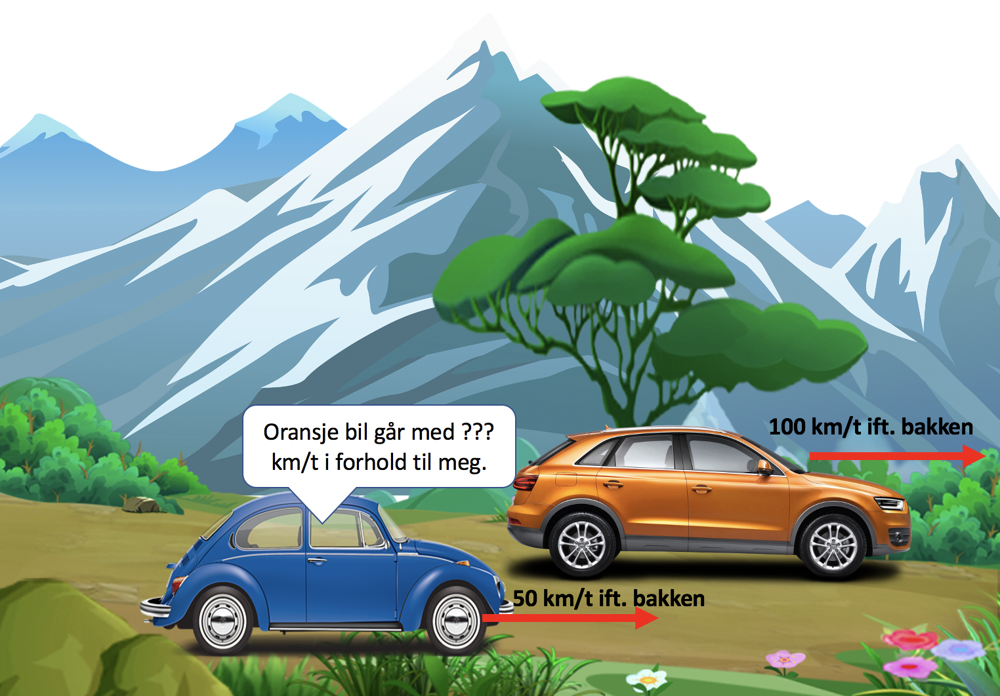

Forrige side🙂 🙁Relativistisk bevegelsesmengdePADLET

Prøv nå å gjøre transformasjonen og se om du kommer frem til: $$\begin{aligned} E'&=\gamma_\mathrm{rel}E-v_\mathrm{rel}\gamma_\mathrm{rel}p_x\\ p_x'&=-v_\mathrm{rel}\gamma_\mathrm{rel}E+\gamma_\mathrm{rel}p_x\end{aligned}$$ der E og px er relativistiske bevegelsesmengder og energier og $$\gamma_\mathrm{rel}=\frac{1}{\sqrt{1-v_\mathrm{rel}^2}}$$